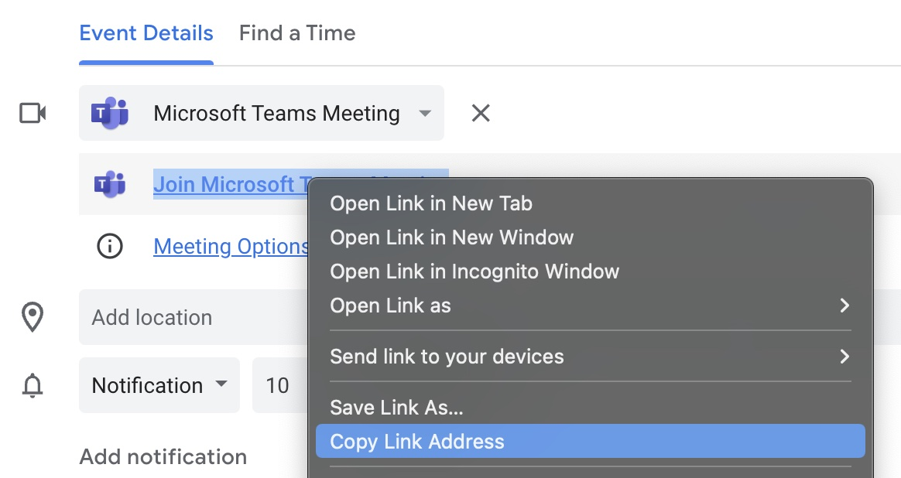
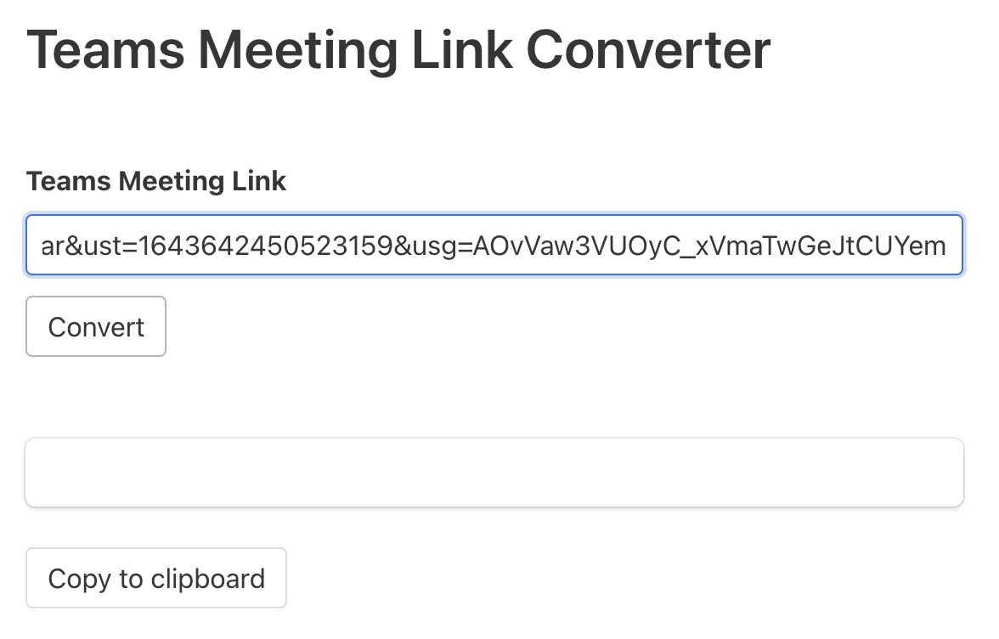
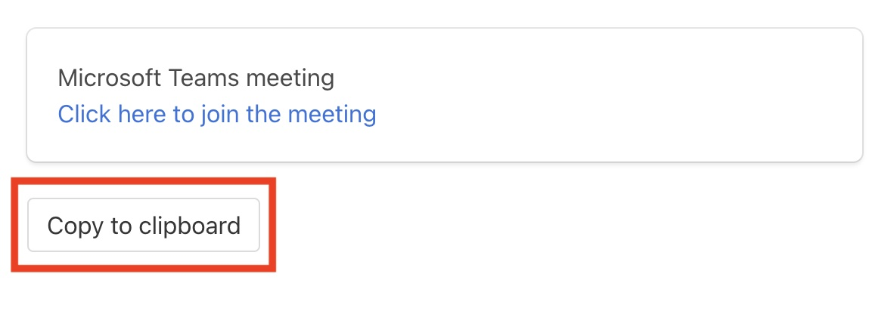
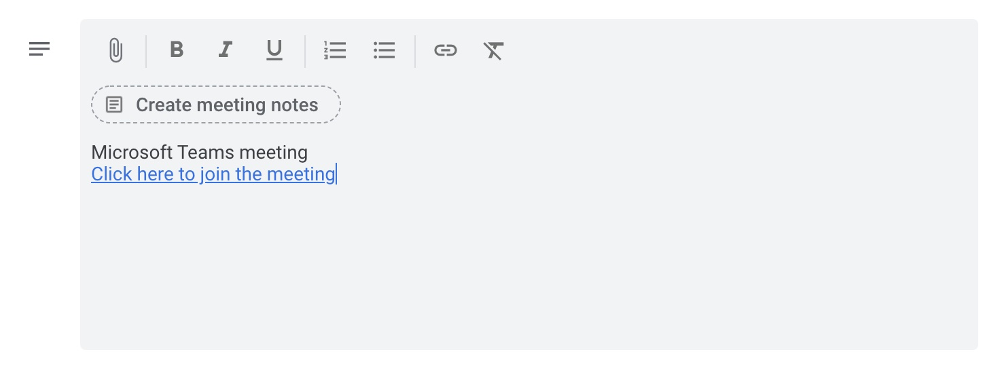

1. Right click and copy the created Teams meeting link in Google Calendar:
2. Paste the link into the link text box and press convert:
3. Copy the resulting text with the Copy to Clipboard button:
4. Paste the invite in the meeting description
